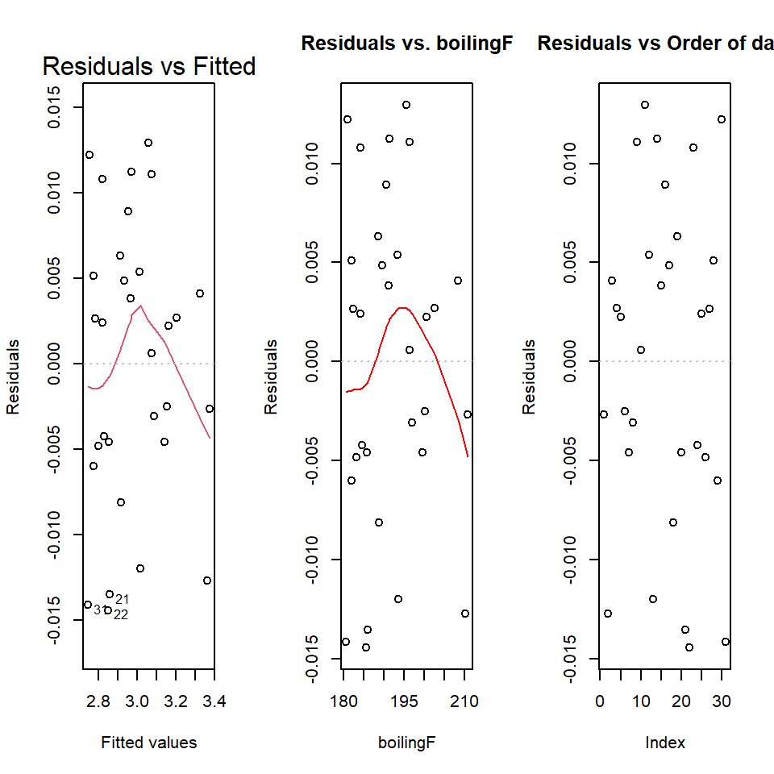

[Advanced Data Analysis 2](https://StatAcumen.com/teach/ada12, Stat 428/528, Spring 2023, Prof. Erik Erhardt, UNM
Author
Sina Mokhtar
Published
March 3, 2023
Hooker’s Himalayian boiling point altitude data
Dr. Joseph Hooker collected the following data in the 1840s on the boiling point of water and the atmospheric pressure at 31 locations in the Himalayas. Boiling point is measured in degrees Fahrenheit. The pressure is recorded in inches of mercury, adjusted for the difference between the ambient air temperature when he took the measurements and a standard temperature.
The goal was to develop a model to predict the atmospheric pressure from the boiling point.
Historical note: Hooker really wanted to estimate altitude above sea level from measurements of the boiling point of water. He knew that the altitude could be determined from the atmospheric pressure, measured with a barometer, with lower pressures corresponding to higher altitudes. His interest in the above modelling problem was motivated by the difficulty of transporting the fragile barometers of the 1840s. Measuring the boiling point would give travelers a quick way to estimate elevation, using the known relationship between elevation and barometric pressure, and the above model relating pressure to boiling point.
Rows: 31 Columns: 2
── Column specification ────────────────────────────────────────────────────────
Delimiter: ","
dbl (2): boilingF, pressure
ℹ Use `spec()` to retrieve the full column specification for this data.
ℹ Specify the column types or set `show_col_types = FALSE` to quiet this message.
# x-variable mean for centeringdat_boil$boilingF %>%mean()
Using ggplot, try to implement these features in a plot. Overlay both a straight-line regression line in blue (geom_smooth(method = lm, col = "blue", ...)), as well as a loess smooth (default) dashed line in red (geom_smooth(method = loess, col = "red", linetype = 2, ...)). Using alpha=1/5 will make the confidence bands more transparent. Also, if you plot the points last, they’ll lie on top of the lines.
Describe the key features of this plot.
Solution
I’ll give you this first plot to help get started, in particular to illustrate a nice use of the caption and the annotation of a second x-axis for the centered version of the boilingF variable.
library(ggplot2)p <-ggplot(dat_boil, aes(x = boilingF, y = pressure))p <- p +scale_x_continuous(sec.axis =sec_axis(~ . -mean(dat_boil$boilingF), name ="boilingF centered"))p <- p +geom_vline(xintercept =mean(dat_boil$boilingF), alpha =1/4)p <- p +geom_smooth(method = lm, se =TRUE, col ="blue", fill ="blue", alpha =1/5)p <- p +geom_smooth(method = loess, se =TRUE, col ="red", fill ="red", linetype =2, alpha =1/5)p <- p +geom_point(size =2)p <- p +labs(title ="Simple linear model" , caption ="Blue solid = line, Red dashed = loess smooth curve" )print(p)
`geom_smooth()` using formula = 'y ~ x'
`geom_smooth()` using formula = 'y ~ x'
[answer]
(3 p) Fit a simple linear regression, assess assumptions.
Fit a simple linear regression model for predicting pressure from boiling point. Provide output for examining residuals, outliers, and influential cases.
Looking at the plots, are there any indications that the mean pressure is not linearly related to boiling point? Are there any observations that appear to be highly influencing the fit of this model? Are there certain points or regions of the data where the model does not appear to fit well? Discuss.
Which, if any, of the standard linear regression model assumptions appears to be violated in this analysis? If you believe that some of the assumptions are violated, does it appear that deleting one or two points would dramatically improve the fit? Would you use this model for predicting pressure from boiling point? Discuss and carry out any needed analysis to support your position.
Call:
lm(formula = pressure ~ boilingF, data = dat_boil)
Residuals:
Min 1Q Median 3Q Max
-0.61383 -0.24968 -0.09921 0.26365 0.81232
Coefficients:
Estimate Std. Error t value Pr(>|t|)
(Intercept) -64.412751 1.429165 -45.07 <2e-16 ***
boilingF 0.440282 0.007444 59.14 <2e-16 ***
---
Signif. codes: 0 '***' 0.001 '**' 0.01 '*' 0.05 '.' 0.1 ' ' 1
Residual standard error: 0.3563 on 29 degrees of freedom
Multiple R-squared: 0.9918, Adjusted R-squared: 0.9915
F-statistic: 3498 on 1 and 29 DF, p-value: < 2.2e-16
e_plot_lm_diagostics(model.lm)
Non-constant Variance Score Test
Variance formula: ~ fitted.values
Chisquare = 3.94974, Df = 1, p = 0.046879
Warning in e_plot_lm_diagostics(model.lm): Collinearity plot only available
with at least two predictor (x) variables.
there is curve in qqplot but its inside the bound so its roughly normally distributed. the observation 1, 2, 3 has lot influence in compare to others but its mostly because of the lack of fit. the observation 1 is highly influential and also large leverage but overall the whole model is not fit. The residuals vs fitted value and residual vs boilingF plot is curvature which mean pressure is not linearly related to boiling point and our model does not fit with the data. the boxcox plot also suggest log transformation. however this model do a precise prediction but we are not suggest simple linear model for this data, because lack of fit. overall its a good model but not the best.
(1 p) Interpret \(R^2\)
Interpret \(R^2\) in the previous simple linear regression model.
Solution
[answer]
The \(R^2\) in the previous model was 0.9917775 which means our model explain %99 variation in response so the model do a good job on prediction, however as we saw before the linear model does not fit the data so $R^2 $ does not tell anything about fitting of a model.
(2 p) A better model.
Decide whether transformation, or a polynomial model in boiling point, is needed to adequately summarize the relationship between pressure and boiling point. If so, perform a complete analysis of the data on this scale (that is, check for influential observations, outliers, non-normality, etc.).
Solution
[answer] we have few options: we could fit a quadratic model or we can do log transformation (boxcox suggestion) we will try both to find a better model.
Call:
lm(formula = pressure ~ boilingF + I(boilingF^2), data = dat_boil)
Residuals:
Min 1Q Median 3Q Max
-0.28756 -0.11622 0.03273 0.10767 0.22521
Coefficients:
Estimate Std. Error t value Pr(>|t|)
(Intercept) 88.0166227 13.9306304 6.318 7.81e-07 ***
boilingF -1.1295410 0.1433571 -7.879 1.39e-08 ***
I(boilingF^2) 0.0040330 0.0003682 10.953 1.24e-11 ***
---
Signif. codes: 0 '***' 0.001 '**' 0.01 '*' 0.05 '.' 0.1 ' ' 1
Residual standard error: 0.1578 on 28 degrees of freedom
Multiple R-squared: 0.9984, Adjusted R-squared: 0.9983
F-statistic: 8984 on 2 and 28 DF, p-value: < 2.2e-16
e_plot_lm_diagostics(model.quad)
Non-constant Variance Score Test
Variance formula: ~ fitted.values
Chisquare = 0.02423367, Df = 1, p = 0.87629
Warning in e_plot_lm_diagostics(model.quad): Note: Collinearity plot unreliable
for predictors that also have interactions in the model.
In qqplot the residuals follow the line much better. the observation 2, 3 has more influence in compare to others but not as much as observation 1 in linear model. the observation 1 is highly influential and also large leverage. there is no structure in residual vs fitted value and residuals vs. boilingF and residuals vs boilingF^2. in boxcoxplot the peak is exactly on 1 which means we could resolve the issue of normality by adding boilingF^2 to the model. the added variable plots both look acceptable. overall all assumptions are met.
the boilingF^2 is significant and \(R^2\) increase from0.9917775 to 0.9984441. therefore this is an acceptable model.
Note: because the boilingF is not centered the only H0 test we can interpret here is the highest ordered term which is boilingF^2 however we can make a new model with centered data. all the residuals and plot and coefficient of boilingP^2 variable will be the same however the coef and p-value of boilingF variable will change.
Call:
lm(formula = log(pressure) ~ boilingF, data = dat_boil)
Residuals:
Min 1Q Median 3Q Max
-0.014437 -0.004710 0.002234 0.005247 0.012937
Coefficients:
Estimate Std. Error t value Pr(>|t|)
(Intercept) -1.0221374 0.0336450 -30.38 <2e-16 ***
boilingF 0.0208698 0.0001753 119.08 <2e-16 ***
---
Signif. codes: 0 '***' 0.001 '**' 0.01 '*' 0.05 '.' 0.1 ' ' 1
Residual standard error: 0.008389 on 29 degrees of freedom
Multiple R-squared: 0.998, Adjusted R-squared: 0.9979
F-statistic: 1.418e+04 on 1 and 29 DF, p-value: < 2.2e-16
e_plot_lm_diagostics(model.log)

Non-constant Variance Score Test
Variance formula: ~ fitted.values
Chisquare = 0.6249889, Df = 1, p = 0.4292
Warning in e_plot_lm_diagostics(model.log): Collinearity plot only available
with at least two predictor (x) variables.
In qqplot the residuals follow the line. the observation 2, 31 has more influence in compare to others. the observation 2 is influential and also large has large leverage. there is no structure in residual vs fitted value and residuals vs. boilingF and residuals vs boilingF^2 however is not as good as the quadratic model. in boxcoxplot the one is in acceptable interval. overall it was improved in compareed to simple linear model but not as good as quadratic model.
the boilingF is significant and \(R^2\) increase from0.9917775 for linear model to 0.9979592. in compare to \(R^2\) : 0.9984441 for quadratic model it is little bit lower therefore this is an acceptable model but not as good as quadratic model.
(2 p) Final model.
Regardless of which scale you choose for the analysis, provide an equation to predict pressure from boiling point. Write a short summary, pointing out any limitations of your analysis.
We did fit a model with a very high R^2 value and also all assumptions have been met however The regression model only apply to the domain of the data that were sampled. there may be also some error in measurement because of fragile barometers that were been used.
Example based on the first linear model
Assuming you called your linear model object model.quad, then the equation with code below will place the intercept and slope in the equation. Just add an r before each of the signif(...) inline code chunks to make the numbers appear. Then use this example to write your final model here.